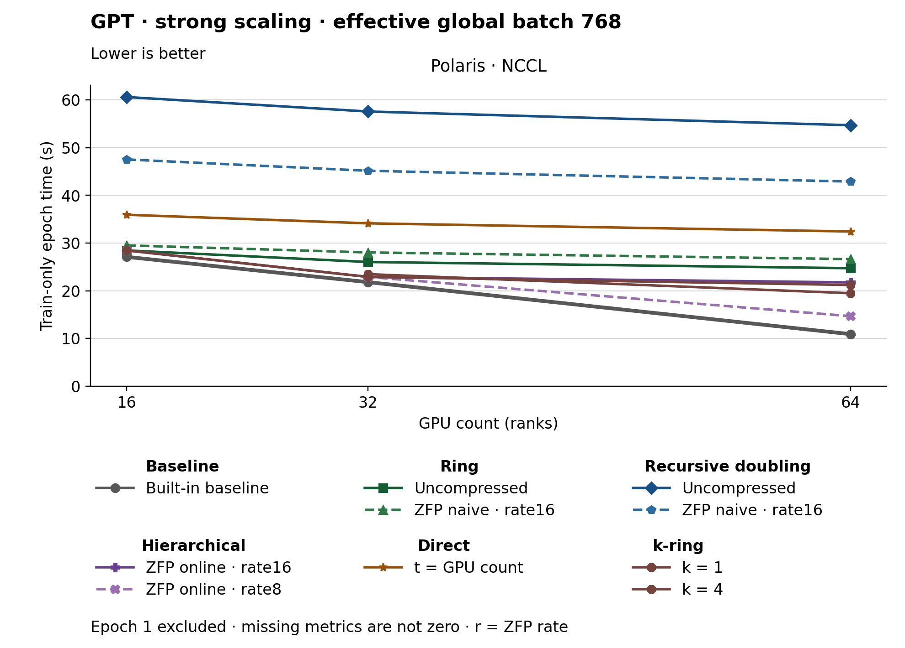

The figure uses lines. Methods use colors, line styles and markers. The metric is Train-only epoch time (s). Polaris · NCCL, GPU count (ranks) 16: Built-in baseline has the lowest plotted value, 27.100. Polaris · NCCL, GPU count (ranks) 32: Built-in baseline has the lowest plotted value, 21.810. Polaris · NCCL, GPU count (ranks) 64: Built-in baseline has the lowest plotted value, 10.905. Epoch 1 is excluded. Values are medians; when repeated runs are available the selected repeat policy is median. These are not confidence intervals across repeated jobs. Missing or unrecorded metrics are omitted, not set to zero.
| Panel | GPU count (ranks) | Method | Value | Runs |
|---|---|---|---|---|
| Polaris · NCCL | 16 | recursive_doubling_zfp_naive:16 | 47.5263 | 1 |
| Polaris · NCCL | 16 | none | 27.1 | 1 |
| Polaris · NCCL | 16 | direct_p | 35.93 | 1 |
| Polaris · NCCL | 16 | hierarchical_zfp_online_coll:16 | 28.455 | 1 |
| Polaris · NCCL | 16 | hierarchical_zfp_online_coll:8 | 28.455 | 1 |
| Polaris · NCCL | 16 | kring_k4 | 28.455 | 1 |
| Polaris · NCCL | 16 | recursive_doubling | 60.61 | 1 |
| Polaris · NCCL | 16 | ring | 28.455 | 1 |
| Polaris · NCCL | 16 | ring_zfp_naive:16 | 29.51 | 1 |
| Polaris · NCCL | 32 | none | 21.81 | 1 |
| Polaris · NCCL | 32 | direct_p | 34.1335 | 1 |
| Polaris · NCCL | 32 | hierarchical_zfp_online_coll:16 | 22.9005 | 1 |
| Polaris · NCCL | 32 | hierarchical_zfp_online_coll:8 | 22.9005 | 1 |
| Polaris · NCCL | 32 | kring_k1 | 23.48 | 1 |
| Polaris · NCCL | 32 | kring_k4 | 22.9005 | 1 |
| Polaris · NCCL | 32 | recursive_doubling | 57.5795 | 1 |
| Polaris · NCCL | 32 | recursive_doubling_zfp_naive:16 | 45.15 | 1 |
| Polaris · NCCL | 32 | ring | 26.03 | 1 |
| Polaris · NCCL | 32 | ring_zfp_naive:16 | 28.0345 | 1 |
| Polaris · NCCL | 64 | none | 10.905 | 1 |
| Polaris · NCCL | 64 | direct_p | 32.4268 | 1 |
| Polaris · NCCL | 64 | hierarchical_zfp_online_coll:16 | 21.7555 | 1 |
| Polaris · NCCL | 64 | hierarchical_zfp_online_coll:8 | 14.67 | 1 |
| Polaris · NCCL | 64 | kring_k1 | 19.48 | 1 |
| Polaris · NCCL | 64 | kring_k4 | 21.21 | 1 |
| Polaris · NCCL | 64 | recursive_doubling | 54.7005 | 1 |
| Polaris · NCCL | 64 | recursive_doubling_zfp_naive:16 | 42.8925 | 1 |
| Polaris · NCCL | 64 | ring | 24.7285 | 1 |
| Polaris · NCCL | 64 | ring_zfp_naive:16 | 26.6328 | 1 |